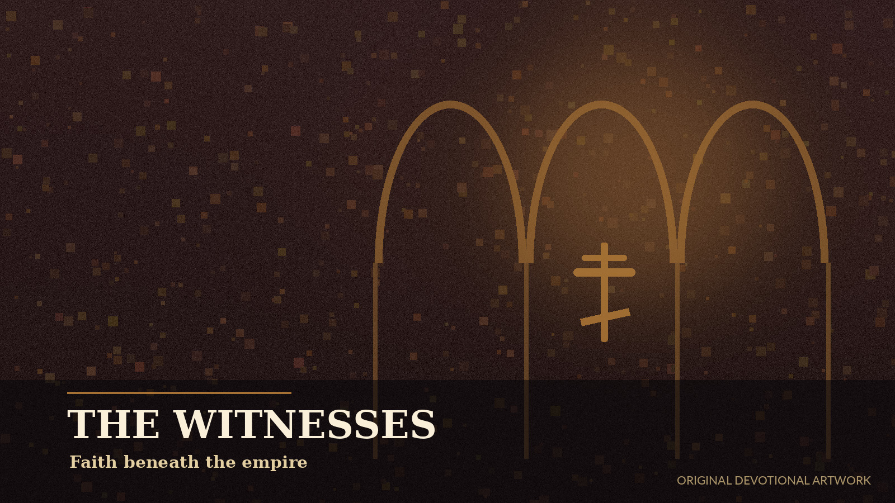

Commemorations
Revised Calendar
Today
Loading the day’s commemorations…
Witness
Martyrs

On This Date
Orthodox History
Rule of the Day
Fasting Guidance
The Paschal Cycle
Journey to Pascha
Creation
Light & Moon
Daily Practice
A Small Rule
Prayer for the Day
Prayer
2026–2030
Liturgical Calendar
Browse the locally stored calendar. Movable feasts are precomputed for every supported year.
Commemoration lists vary among Orthodox jurisdictions. Curated principal entries are marked; other dates retain a jurisdictional notice rather than inventing a list.
A Portable Prayer Book
Prayers
Traditional core prayers and clearly labeled original devotional prayers, available without a connection.
The Seed of the Church
Martyr Archive
Search the locally curated memorial index by name or calendar date.
On This Date
Historical Daily
A local collection of concise historical spotlights connected to feasts, councils, witnesses, worship, and the life of the Church.
Stillness & Memory
Prayer Tools
Nothing leaves this device. Timer, settings, favorites, and journal entries remain in your browser unless you export them.
Candle Timer
Keep a Little Silence
05:00
Private Journal
Reflection
Stored only in this browser’s local storage. Clearing site data will erase it unless exported.
Portability
Export or Restore Your Local Data
Export favorites, journal entries, and preferences as a small JSON file.
Local, Quiet, Durable
About Orthodox Daily
Designed for GitHub Pages
This is a static progressive web app. It has no server, account, tracking pixel, analytics service, advertising code, or cloud database.
Offline Through 2030
Calendar, prayer, feast, fasting, martyr, and historical data are packaged with the app. The service worker stores the app for offline use after the first visit.
Automatic App Updates
When a new version is published to GitHub Pages, the service worker checks for changed files and refreshes the installed app. The content itself never depends on a remote feed.
Responsible Scope
This edition includes curated principal commemorations rather than claiming to be a complete jurisdiction-specific synaxarion. Fasting guidance is broad and never replaces the direction of one’s priest or physician.
Local Visual Library
This edition includes eighteen full-size original JPEG artworks stored in the repository. They rotate with the calendar and appear throughout the martyr and history archives. They are devotional illustrations, not canonical icons or documentary photographs.
No Remote Image Dependency
Every content image is cached for offline use. The app does not pull pictures from social media, image hosts, or third-party APIs.
Sources & Editorial Method
The calendar structure and Paschal dates were checked against official Orthodox references. Historical summaries are concise editorial overviews. Traditional prayers are identified in the local prayer data; original prayers are labeled devotional.
Version 1.1.0 • Data window: January 1, 2026–December 31, 2030.